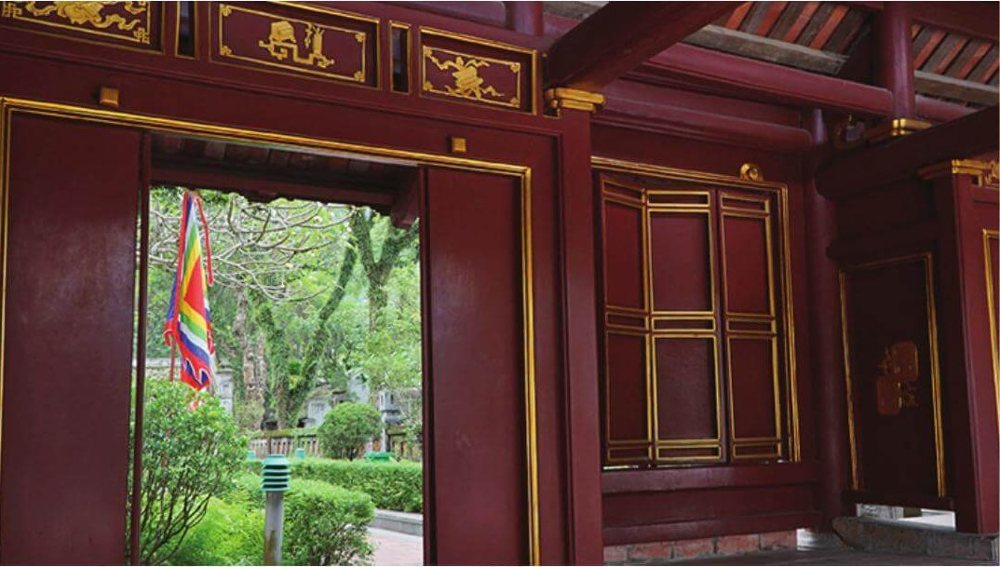
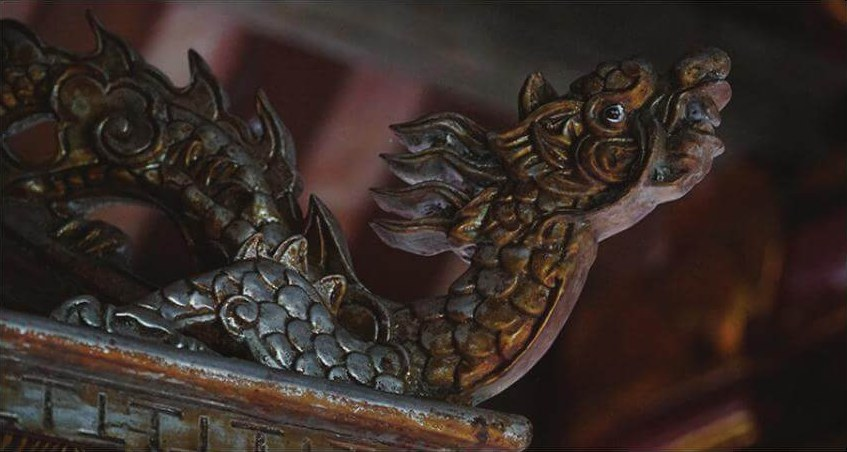

CỐ ĐÔ HOA LƯ
黎王廟の外儀門と内儀門

全体として、黎大行王廟の建築は丁先皇廟と多くの類似点を持っています。遺跡を探索する旅の中で、観光客は外儀門と内儀門の2つの門を通り抜けて、廟の主要な空間に進むように招待されます。
最初の門は外儀門で、19世紀のグエン朝の建築様式を強く残しています。ここでの芸術的ハイライトは、「八宝」を主とした装飾テーマであり、本箱、筆筒、ひょうたん、碁盤、巻物、琴、果物かご、神聖な袋などのおなじみのイメージが精巧に彫刻されています。これらのイメージは柔らかい絹の帯と巧みに組み合わされ、静と動の調和のとれた交錯、緻密で生き生きとした構図を作り出しています。これにより、昔の職人たちは、精神的な調和、深遠な哲学、そして円満で幸せな生活への願いを託しました。

外儀門を通り抜け、観光客はさらに内側の内儀門へと移動します。外側の門とは異なり、内儀門は17世紀の後黎朝時代の建築様式と彫刻芸術を色濃く残しています。この建築は3つの部屋と堅固な「3列の柱」の構造から成ります。ここはまた、観光客が立ち止まり、衣服を整え、遺跡の神聖な場所に入る前に敬意と厳粛さを示すための空間でもあります。

内儀門では、玉を咥える龍、巣にいる龍から群れをなす龍まで、非常に生き生きと集まった龍の姿を通じて、昔の職人たちの精巧な彫刻の才能を鑑賞する機会があります。特にここに立ち寄った際には、独自の民間色が強い彫刻のイメージ、すなわち龍に乗る2人の天女を描いた浮き彫りを見逃してはなりません。広げた腕のしなやかな舞の姿勢と柔らかい衣装を持つ天女の姿は、伝説のアプサラ舞踊の優美な踊りを連想させます。

精巧な彫刻の線を持つ古風な儀門を通り抜けることで、観光客は職人の芸術的才能を感じるだけでなく、民族の魂を保存する敬虔な心をも見ることができます。